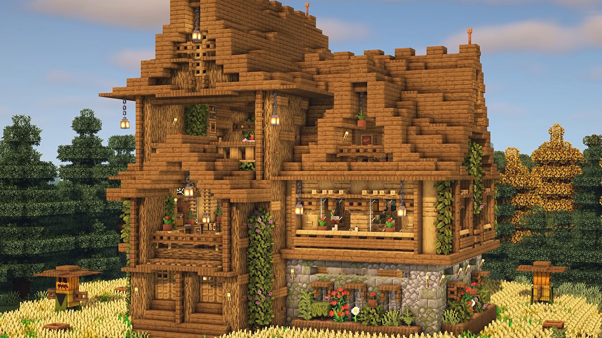
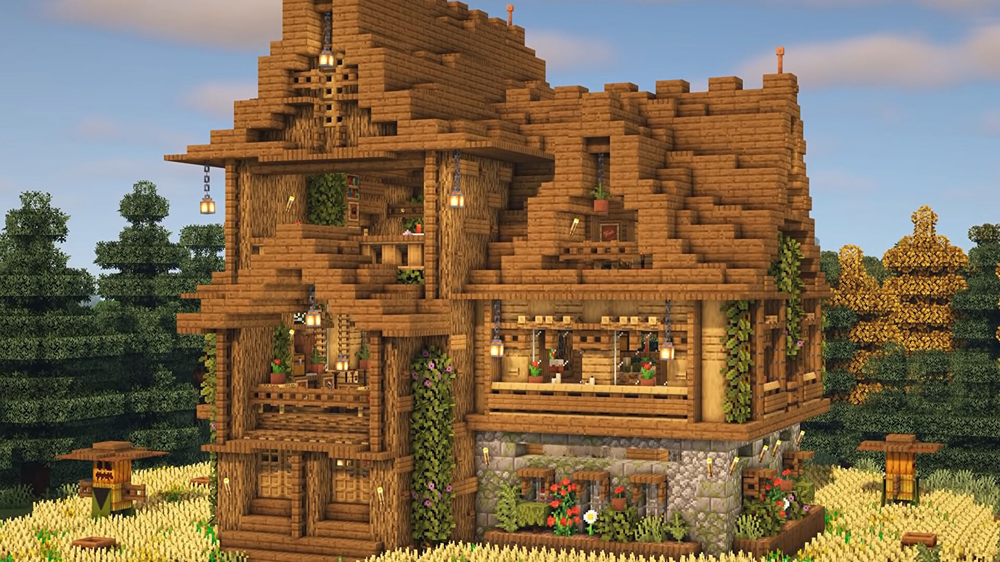

A Minecraft nyílt világú sandbox videójáték, melyet a svéd Markus Persson indított útjára 2009-ben, és a Mojang adott ki 2011-ben. 2014-ben a Microsoft felvásárolta a játék fejlesztésével és kiadásával foglalkozó céget, ezzel együtt birtokukba került a Minecraft tulajdonjoga is. A Minecraft minden idők legkelendőbb játéka. 2020 májusára 200 millió példányt adtak el belőle valamennyi platformon, továbbá havi szinten 126 millió aktív játékossal rendelkezik.
A Minecraftban a játékosok egy blokkokból álló, pixeles, 3D világot fedezhetnek fel, felhasználhatják annak a nyersanyagait, eszközöket készíthetnek, építményeket építhetnek, továbbá a játék módjától függően harcolhatnak számítógép vezérelte ellenségekkel, vagy akár együttműködhetnek más játékosokkal. A játék több módban is játszható: a gyűjtögetésre, barkácsolásra és harcokra fókuszáló túlélő és a végtelen forrással rendelkező kreatív, vagy szemlélő módban. A Java alapú kiadásban különböző modokkal új játékmechanikával, tárgyakkal és grafikával lehet kiegészíteni a játékot.
A Minecraft nagy népszerűségnek örvend, számos díjat nyert el és minden idők egyik legbefolyásosabb játéka lett. A játék népszerűsítésében nagy szerepet játszott a közösségi média, paródiák, különböző adaptációk, ajándéktárgyak, illetve az évente megrendezésre kerülő MineCon. A játékot az oktatásban is felhasználták első sorban számítástechnikai rendszerek, virtuális számítógépek és hardverek terén. Számos spin-off is készült, ilyenek a 2015-ös Minecraft: Story Mode, a 2019-es Minecraft Earth és a 2020-as Minecraft Dungeons., és a 2023-ra várható Minecraft Legends.
 
